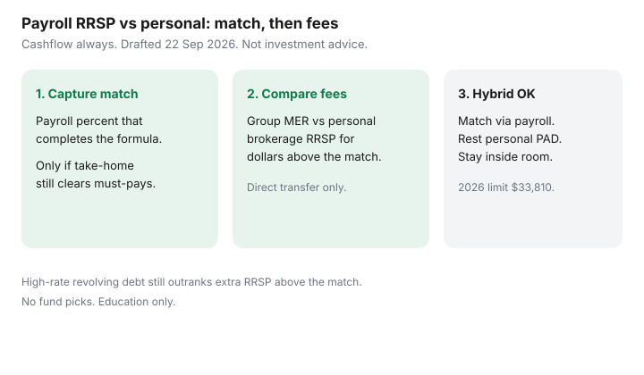

Personal Finance · Canada
Payroll RRSP Deductions vs Personal Contributions in Canada: Cashflow and Fee Trade-offs
Payroll RRSP deductions buy discipline and, when a match exists, free dollars. Personal contributions to a self-directed RRSP can buy lower fees and a wider menu. Households often pick one lane and overpay: they ignore a match to chase a cheap ETF, or they dump every spare dollar into a high-fee group plan after the match is already full.
This page compares cashflow and fee trade-offs for Canadian employees. No fund picks. Education only. CRA figures ~22 Sep 2026. Pair it with employer RRSP match for the formula itself.
Disclosure: Banking and investment-account products are offer types. Saving Optimizer may later add partner links. We do not currently claim brokerage or plan-sponsor partnerships. Education only — not tax or investment advice. No debt-settlement pitch.
Key takeaways
- Capture the full employer match through payroll first, if the percent still leaves rent, minimums, and a bill float intact.
- Payroll reduces take-home now; that is a feature for habit and a risk if PADs already bounce.
- Above the match, compare the group plan’s fees and menu to a personal brokerage RRSP. High MERs can justify moving only the excess — by direct transfer rules in your booklet.
- 2026 RRSP dollar limit is $33,810. Your personal limit is on the notice of assessment.
- Hybrid is allowed: match via payroll, rest personal, inside room.
How payroll RRSP deductions change take-home pay
An employee contribution is withheld from gross or net according to the plan and payroll system. Many Canadian group RRSPs also adjust income-tax withholdings so you do not wait for a refund to feel the deduction. The cheque still gets smaller. Label the drop: “$80 to RRSP,” not “mysterious missing money.”
If the new net pay collides with rent, childcare, and a card minimum, lower the percent or fix the bill calendar first. An NSF after raising RRSP is not a savings win. The NSF context after the 12 March 2026 $10 cap is on stop NSF fees.

Personal lump contributions vs biweekly payroll
Payroll spreads contributions across the year, captures matches that require payroll elections, and removes the decision from Friday night. Personal lumps (or a PAD you control at a bank) let you choose the institution, the fees, and the timing — including the first 60 days for a prior-year deduction (deadline 2 March 2026 for the 2025 year).
Lumps fail when the money never leaves chequing. Payroll fails when the percent is set for a raise you have not received. Neither path creates room you do not have.
Employer match and plan fee realities
Read the match formula in the booklet: percent of employee contribution, earnings definition, annual ceiling, vesting if a DPSP is involved, and whether a mid-year true-up exists. Details live on capture the employer RRSP match.
Then read fees: member administration, fund MERs, and any withdrawal or transfer costs. A 1% MER gap on money above the match is a quiet annual tax on your own savings. A 100% match on the first 3% of pay is usually worth a mediocre menu for that slice only.
When personal brokerage RRSP wins on fees
Personal often wins when:
- There is no match, or the match is already fully captured.
- Group MERs or forced funds are clearly expensive versus a low-cost option you already understand.
- The plan allows transfers out to a self-directed RRSP without a punitive fee for the amounts you care about.
- You will actually automate the personal PAD — see the habit side of pay yourself first.
Personal loses when the match would be missed, when cashflow needs the withholding discipline, or when “self-directed” becomes speculative trading. This page does not pick ETFs or stocks.
Hybrid approach: match via payroll, rest personal
Set payroll to the lowest percent that captures the full match. Send additional savings to a personal RRSP by PAD the day after payday, within remaining room. Track both contributions in one ledger so you do not over-contribute.
If the group plan is the only place the match lands, leave matched money there unless and until a transfer is allowed and wise. Do not withdraw cash from an RRSP to “move” it — that is taxable.
A payroll vs personal RRSP decision table
| Situation | Lean payroll | Lean personal |
|---|---|---|
| Match available, not captured | Yes — up to the match percent | Only after match is on |
| Match full; group MER high | Hold matched slice | Yes for dollars above the match |
| No match; good low-fee habits | Optional for discipline | Often preferred |
| Tight cashflow, PADs at risk | Only a tiny percent, or pause | Pause until the float is stable |
| High-rate card revolving | Match only, if any | Card before extra RRSP — see debt or TFSA |
Sources & date stamps
- CRA — RRSPs and related plans; 2026 RRSP dollar limit $33,810; contribution deadline 2 March 2026 for the 2025 year (~22 Sep 2026).
- CRA — group RRSP and contribution room concepts on canada.ca; confirm your notice of assessment.
- Plan booklets govern match, fees, and transfers — employer-specific; not published as a national rate.
- FCAC — budgeting and debt pages: payroll elections should not starve must-pay bills.
Frequently asked questions
Does a payroll RRSP deduction lower my take-home immediately?
Yes. The employee contribution comes off the paycheque. Tax withholdings may also fall when the employer codes the deduction for tax purposes, but that depends on payroll setup. Your net pay drops by roughly the contribution less any withholding change — not by zero.
When does a personal brokerage RRSP win on fees?
When the group plan’s MER or administration fees are high, the investment menu is poor, and you have already captured the full employer match (or there is no match). Move only what the plan allows by direct transfer; do not cash out.
Should I still use payroll if there is a match?
Usually yes, at least up to the percent that captures the full match. Leaving a match on the table to save a small MER is often the expensive choice. Size the percent so minimums and the bill float still clear.
Can I combine payroll and personal contributions?
Yes. A common hybrid is: payroll percent that captures the match, then personal contributions to a self-directed RRSP for amounts above the match, within your deduction limit. The 2026 dollar ceiling is $33,810.
Do employer deposits use my RRSP room?
Group RRSP contributions generally use your RRSP deduction limit in the year. Confirm your notice of assessment and the plan booklet. A DPSP is different — see the employer match guide.